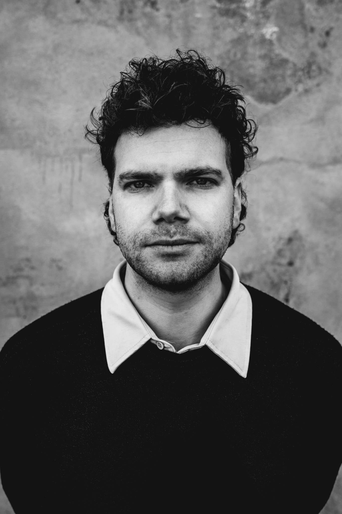

Utrecht, Nederland Utrecht, Netherlands
All round creative. All round creative.

Disciplines
Ik ben ontwerper en creatief denker, werkzaam bij de NOS waar ik journalistieke producties vormgeef en sturing geef aan de creatieve richting van journalistieke uitingen zowel op televisie als online. Naast mijn werk als ontwerper ben ik muzikant. Met de band bloc bloc bloc sta ik regelmatig op het podium met eigen werk. I am a designer and creative thinker, working at NOS where I shape journalistic productions and steer the creative direction of journalistic output across television and online. Alongside my work as a designer, I am a musician. With the band bloc bloc bloc I regularly perform my own work on stage.
Brede interesses in film, reizen, sport en kunst voeden een werkwijze waarin disciplines elkaar voortdurend kruisen. Wide-ranging interests in film, travel, sport and art fuel a way of working in which disciplines constantly intersect.